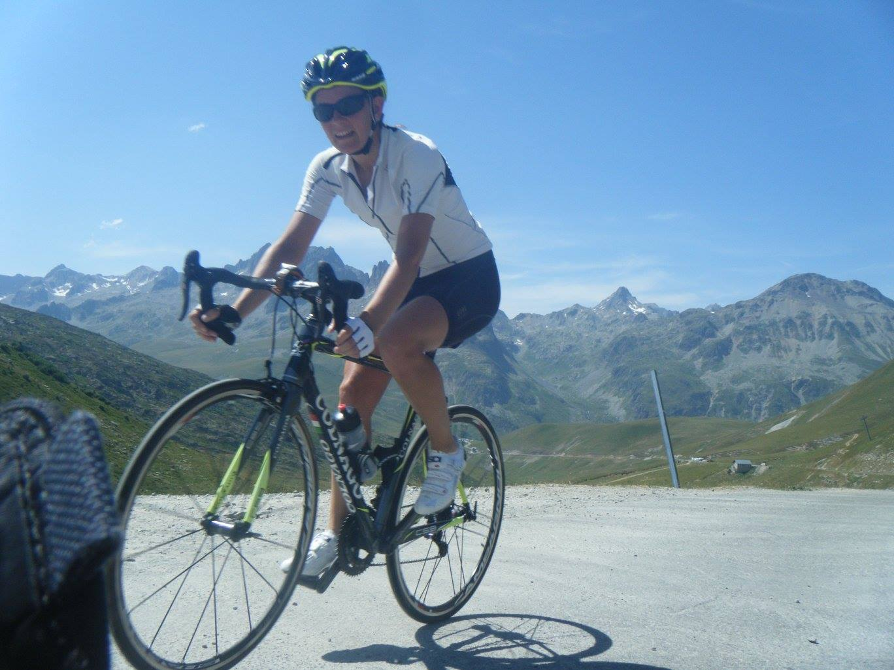

About Me
I have been a teaching ESL and work-readiness skills at Universities and in workplace training programs. I have a BA in English Literature and French, and an MA in Teaching English as a Second Language. In my most recent position, I have designed materials to be delivered on e-learning platforms. I enjoyed this and so have decided to shift from teaching into web development.
As a teacher, I have learned to become an excellent problem-solver and to work collaboratively with my peers. In addition, I have gained experience with Blackboard, Banner, SoftChalk, and Sharepoint. I am currently enrolled in a full-stack web development course with the University of Arizona. In my free time, I love to go cycling in the Alps -- or any nearby mountains!